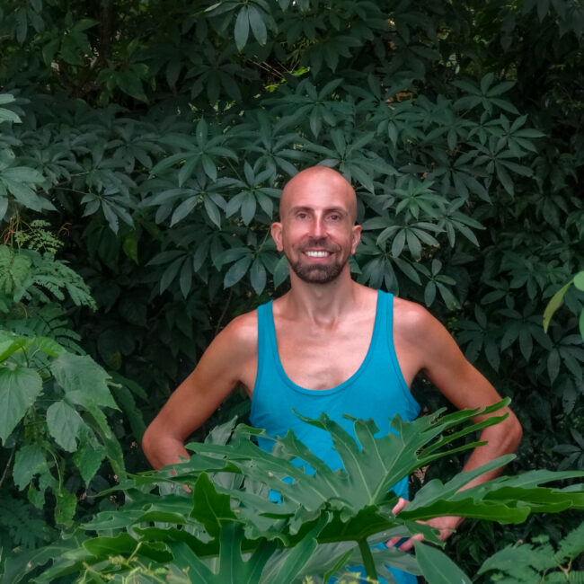

Kinkological
Bodywork

Nachdem du mich kontaktiert hast, werden wir als Erstes ein telefonisches Vorgespräch führen. Hier kann ich auf deine spezifischen Fragen zu Kinkological Bodywork eingehen und wir können gemeinsam ein paar Ideen entwickeln, wie wir deine Wünsche und Interessen umsetzen können.
Das ist komplett unverbindlich und wenn das für dich passt, klären wir als Nächstes die ganzen äußeren Modalitäten, wie Zeitfenster und Raum, etwaige Tools/ Toys, die wir brauchen, Schritte der Vorbereitung etc.
Wenn wir uns dann treffen, beginnen wir die Session zunächst erneut mit einem Gespräch, in dem wir uns weiter deinem Vorhaben annähern.
Dann eröffnen wir den Erfahrungsraum. In dieser Phase gibt es zwei mögliche Settings, das „Lab“ oder die „Scene.“ Je nach Thema haben wir uns im Vorhinein für das eine oder das andere Szenario entschieden.
Ein „Lab“ ist das Labor, indem du per Selbstversuch zu erweiterten Erkenntnissen gelangst. Es ist der Raum für primär physisch-somatisches Forschen.
Die „Scene“ ist eine mehr oder minder konkret durchgeskriptete Inszenierung mit klarer Rollenverteilung. Wie diese Szene aussieht, ist extrem individuell und unterliegt oft ihrer eigenen Dynamik. Geskriptete Scenes nutze ich methodisch für alles was mentale, emotionale, psychische, identifikatorische etc. Themen angeht. Auch Re-Inszenierungen von Situationen aus der eigenen Biografie fallen hierunter.
Wichtiger Teil der Kinkological Bodywork ist, wie bei jedem anderen somatischen Ansatz, das Nachgespräch. In diesem De-Briefing widmen wir uns den Learnings aus deinen Erlebnissen.
Eine Session kann je nach Forschungsthema für sich alleine stehen oder Teil einer Begleitung bestehend aus mehreren aufeinander aufbauenden Sessions sein.
Wir werden im Vorab-Gespräch eine Vereinbarung treffen, die sich danach richtet, was du machen möchtest. V.a. hängt es an der Dauer der Session. Partner*innen-Sessions sind in der Regel etwas preisintensiver.
Als Richtlinie nehme ich für pro Stunde Kinkological Bodywork eine Sliding Scale von 100 bis 130 Euro nach ehrlicher Selbsteinschätzung an. Für eine einfache Lab-Session solltest du aber bereits 2h einrechnen.
Hinzu kommen ggf. Mietkosten für den Raum, wenn es etwas größeres/ besonderes sein soll.
Falls du einen geeigneten eigenen Raum zur Verfügung stellen möchtest, berechne ich innerhalb des Berliner Innenstadtgebiets den Weg mit 10 Euro pauschal. Sonst nach tatsächlichen Fahrtkosten.